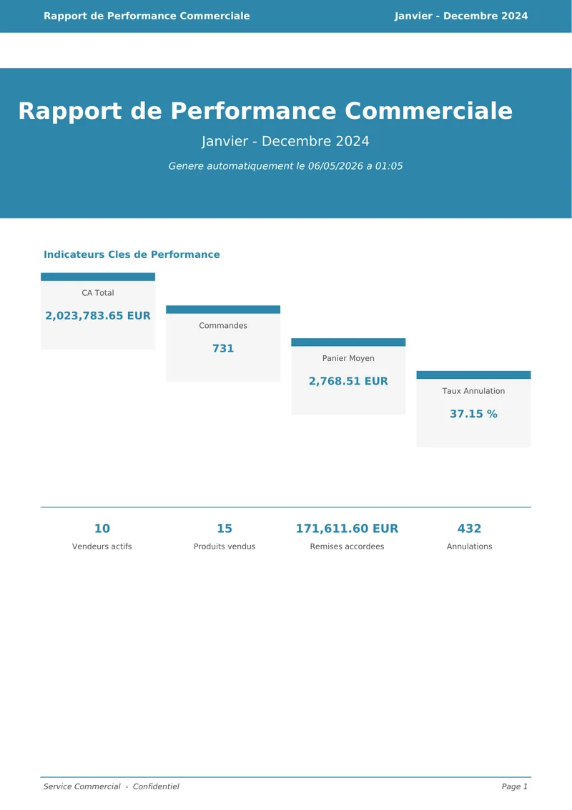

Une demi-journée gagnée
Fusion, nettoyage, calculs, graphiques et mise en page s'enchaînent sans intervention. Le rapport peut même se générer seul le 1er du mois.
5 héconomisées chaque mois
Démo en ligne · sans inscription
Déposez vos exports ERP : l'outil les fusionne, corrige les erreurs de saisie, calcule les indicateurs clés et produit un rapport PDF de 6 pages prêt pour la réunion de direction.
Pourquoi
Chaque mois, le même rapport demandait une demi-journée de copier-coller. Ce temps revient désormais à l'analyse.
Fusion, nettoyage, calculs, graphiques et mise en page s'enchaînent sans intervention. Le rapport peut même se générer seul le 1er du mois.
5 héconomisées chaque mois
Doublons, remises saisies en %, statuts incohérents, valeurs manquantes : chaque anomalie est détectée, corrigée et signalée dans un journal.
7types d'anomalies corrigés
Indicateurs clés, classements, tendances et répartitions réunis dans un PDF toujours présenté de la même façon, lisible en quelques minutes.
8indicateurs, 5 graphiques
Le livrable
Six pages A4 qui vont de la vue d'ensemble au détail. Choisissez une page pour la parcourir.

Fonctionnement
Le même pipeline Python tourne en ligne de commande, chaque mois en automatique, ou ici dans votre navigateur.
Tous les fichiers CSV du dossier sont chargés et fusionnés, quel que soit leur nombre. Une colonne manquante ? Le pipeline s'arrête avec un message clair plutôt que de produire un rapport faux.
Doublons supprimés, valeurs manquantes complétées, remises saisies « 10 » au lieu de « 0,10 » corrigées, statuts harmonisés. Sans cette étape, le chiffre d'affaires deviendrait négatif.
Le chiffre d'affaires net est calculé ligne par ligne, les commandes annulées ou retournées sont exclues, puis tout est agrégé par vendeur, mois, catégorie, région et produit.
Cinq graphiques sont produits avec un style commun : classements, tendance mensuelle, répartition par catégorie et heatmap vendeurs × régions.
Graphiques et tableaux sont assemblés dans un document A4 de 6 pages, horodaté, prêt à être envoyé ou imprimé.
Fonctionnalités
Charge et fusionne tous les CSV d'un dossier, quel que soit leur nombre.
Doublons, trous, types, remises et statuts corrigés, puis signalés.
CA comptabilisé, panier moyen, taux d'annulation, remises accordées…
Classements, tendance mensuelle, catégories, heatmap vendeurs × régions.
Mise en page A4 soignée, horodatée, polices embarquées.
Le rapport se génère seul le 1er de chaque mois à 8 h.
Chaque étape et chaque anomalie détectée sont consignées.
Nettoyage, calculs, service et API vérifiés à chaque modification.
Démo interactive
Un rapport complet en quelques secondes. Le pipeline réel s'exécute sur le serveur, étape par étape.
Le projet
Un projet mené seul, de l'identification du besoin à la mise en ligne. Les points clés pour un recruteur ou une équipe RH.
Un temps perdu mesurable, 5 heures par mois, supprimé plutôt que du code écrit pour lui-même.
Corrections signalées dans un journal, calculs couverts par 204 tests automatisés.
Repérer les pièges silencieux, comme une remise saisie 10 au lieu de 0,10 qui rendrait le CA négatif.
Cinq modules indépendants, une configuration centralisée, trois interfaces branchées sur le même cœur.
Un livrable lisible par une direction, une démo utilisable sans aucune compétence technique.
Cadrage, développement, tests, documentation et déploiement réalisés de bout en bout.
FAQ
Non. Ils sont écrits dans un dossier temporaire le temps du traitement, puis supprimés. Le rapport généré reste téléchargeable pendant une heure via son lien unique, puis il est effacé de la mémoire du serveur.
Un ou plusieurs fichiers CSV séparés par des virgules, encodés en UTF-8, avec ces 9 colonnes dans n'importe quel ordre : date, vendeur, region, produit, categorie, quantite, prix_unitaire, remise, statut.
Télécharger un fichier modèle ou les 12 exports de ventes 2024 d'exemple (.zip).
Pour chaque ligne : quantité × prix unitaire × (1 − remise). Les commandes annulées ou retournées sont exclues du chiffre d'affaires comptabilisé et comptent dans le taux d'annulation.
Non. Elles sont générées par un script avec une graine fixe : 10 vendeurs fictifs, 6 régions, 15 produits sur l'année 2024. Les chiffres illustrent le fonctionnement de l'outil, pas une entreprise réelle.
Oui. L'outil s'installe avec Python ou se lance avec Docker, et peut générer le rapport automatiquement chaque mois, sans intervention.
Le serveur de la démo s'arrête quand personne ne l'utilise. Le visiteur suivant attend qu'il redémarre : quelques secondes en général, jusqu'à une minute sur un hébergement gratuit.
Un clic suffit pour générer un rapport complet à partir de 12 mois de ventes.
Plus long que prévu : le serveur traite peut-être une autre demande ou sort de veille. Merci de patienter.